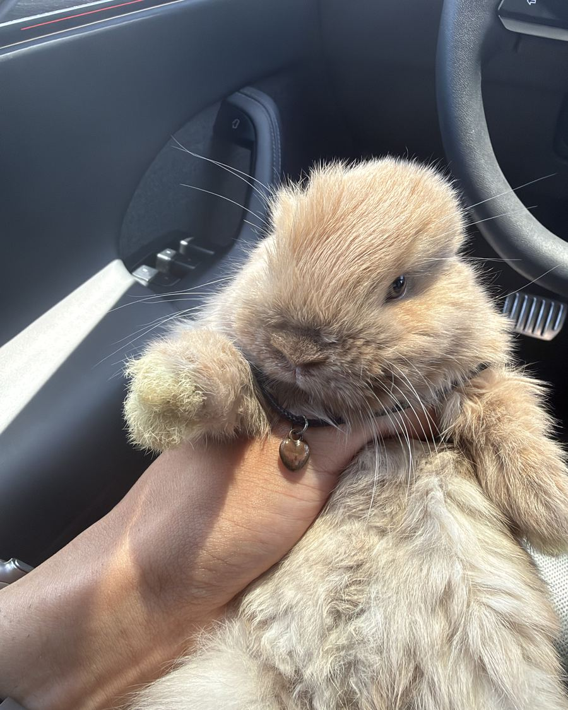
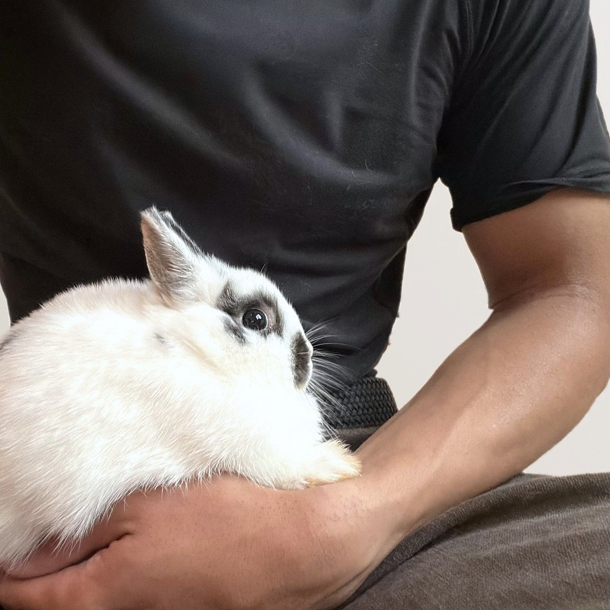
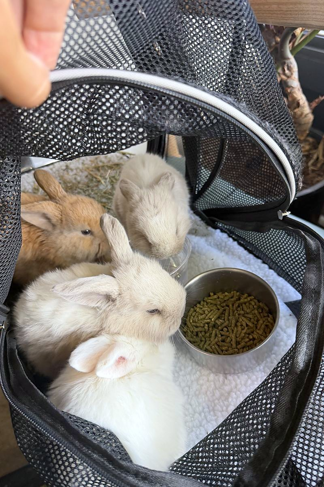

Hand-raised Holland Lops in Tucson.
Handled every single day from their first week. Yours arrives already comfortable being picked up, by anyone, not just me.

Available now
Litters are small and I don't rush them. The price you see is the whole price, and it covers eight weeks of daily handling before the rabbit is old enough to leave.
Availability what's changed lately
Want to see the next litter first?
When a litter is born I send one email with photos of them, a few days before they go up on the site. That is the only thing I use your address for, and you can tell me to stop whenever you want.
You're on the list. The next email you get from me will be photos of the new litter.
About
Temperament is decided before you ever meet them.
I'm William, and I came to rabbits through chinchillas. They're remarkable animals, but a chinchilla doesn't want to be held. That's their nature, not a shortcoming, and keeping them taught me what I was actually after: an animal that comes to you.
Then a farmer sold me a Satin Angora, and that was the animal I had been describing to myself. A Holland Lop followed, and when those two had their first litter I stopped calling it a hobby.
Every dollar this makes goes straight back into the rabbits. The plan is to be the best breeder in Tucson, then in Arizona, and I don't intend to stop there.
None of that counts for anything if the rabbit won't let you pick it up. So this next part is the one I care about most.
Rabbits are prey animals. Left alone, instinct fills in the gaps. By five months you have one that flattens when a hand comes near. People assume they picked a shy one. Usually they picked one nobody spent time with.
The part that decides it happens early, around the time their eyes open in the second week. That's weeks before you'd ever meet them, so it falls on me. I use it, and I keep handling them every day after, including by people who aren't me. A rabbit that's calm only with its breeder isn't socialized. You find that out the first time a friend tries to hold it.

The first eight weeks
What happens before you meet them
The whole routine. Ask me about any part of it.
First handling
Short, gentle sessions within days of birth, nest kept warm and mostly undisturbed.
Carrying becomes normal
Lifting paired with calm and food. Leaving the ground is the fear most pet rabbits never lose.
New people, new noise
Visitors, kids, household sound, car rides, other animals. Variety is what builds real confidence.
Ready to go home
Eight weeks is when they go home. By then they're off milk, eating and drinking on their own, and settled enough that a move isn't a shock. I check weight and health before anyone leaves, and one that isn't quite there waits.
Included
What you take home
The first two weeks decide how the next ten years go, so nobody should be guessing through them.
- Two weeks of their current foodChanging their food suddenly upsets their stomach. Mix the new in slowly.
- A written care sheetDiet, litter habits, and the specific signs that mean call a vet today.
- A health check you watchEars, teeth, eyes, weight and coat, gone over together at pickup.
- Tucson exotic vet recommendationsNot every clinic here treats rabbits. Better to know now.
- My phone number, keptNo question limit and no expiry. This is the part I care most about.

Also offered
Boarding, whenever you travel
Most kennels aren't set up for rabbits, and one left with a stranger spends the whole week stressed. Yours comes back to the same routine, the same food, and the same hands that raised it.
- Hay, pellets, clean bedding and the daily handling they grew up with
- Photos while you're gone, so you're not left wondering
- Charged by the day, so you only pay for the days you're actually away
There is a rabbit virus going round Arizona's wild rabbits again this year, called RHDV2, and it is usually fatal. Keeping the property closed to outside rabbits is how I keep everyone here safe, yours included.
FAQ
Things people ask
If yours isn't here, text me. There's no dumb rabbit question.
How does this work?
Send me a note or a text with a bit about your situation. I'll tell you honestly which rabbit fits, including if the answer is none right now and you should wait for the next litter. Then we set a time and you come and meet them, and that visit is free and there's no booking fee.
If one's right for you, $100 holds them and comes off the price. Rabbits open for reservation at four weeks old and go home at eight. At pickup we go through the care sheet together and you leave with everything on the list above.
Why do they cost what they cost?
Every rabbit's price is listed on its own photo above, and that number is what you pay. No appointment fee, no no-show fee, nothing added at pickup. Second rabbit is 20% off.
What the price covers is eight weeks of daily handling before the rabbit is old enough to leave, a health check you watch me do, two weeks of the food they're already eating, a written care sheet, and my phone number for as long as you have them. Prices differ between rabbits because colour and temperament differ, and the rarer a colour is, the higher it sits. Right now the two fawn does are the $375 ones and the two sable point bucks are $350.
You can find a cheaper rabbit. You'll find plenty on classifieds for under a hundred. What you're paying the difference for is a rabbit that's already comfortable being picked up, and someone who answers the phone at month seven.
Is there a deposit, and what happens to it?
$100 holds a rabbit, and it comes straight off the price. Once it's paid I take that rabbit off the list so nobody else can claim it, and it's yours until pickup.
Rabbits open for reservation at four weeks old. Before that I won't take your money. At two weeks I can't tell you for certain what sex a kit is and the coat is still settling, so anything I said would be a guess dressed up as a fact. Four weeks is the point where I can describe a rabbit to you honestly.
The deposit is non-refundable, and I'll be straight about why: holding a rabbit means turning other people away, so if someone changes their mind late I've lost weeks of interest on that animal. But it isn't lost money. It's transferable. If your circumstances change, or you meet them and click with a different one, I'll move your $100 to another rabbit or a future litter.
Three things get you a full refund instead, no argument:
- The rabbit becomes ill or doesn't make it while still in my care.
- I'm the one who cancels, for any reason.
- The rabbit isn't what I told you it was. If the sex is wrong, the colour is materially different from the listing, it isn't the rabbit you reserved, or it doesn't pass the health check we do together at pickup, you get your money back.
One honest note on that last one, because four weeks is early. Colour and markings can still develop between reservation and pickup, and a five week old rabbit is not finished becoming itself. When you reserve I'll tell you plainly what's already certain and what could still change, and you'll get photos the whole way through so nothing at pickup is a surprise. Normal growing up isn't grounds for a refund. Being wrong about something I stated as fact is.
How to pay: Zelle, Apple Pay, or cash. The balance is due at pickup and cash is easiest for that.
If you're local and would rather not send money to someone you haven't met yet, which is a reasonable instinct, come and meet them first and pay the deposit in cash while you're here. That's genuinely fine by me and it's what I'd suggest. Visits are free and there's no booking fee, so nothing is at stake until you've decided. For anyone further out, I'll send written confirmation the moment a deposit lands, with the rabbit's name, the amount, and the date, so you have it on record.
Can I take one home before eight weeks?
Eight weeks is when they're actually finished. The last stretch is when they come off milk and onto solid food for good, and their gut is still learning the job. A new house, new water and a new bag of food all landing at once is a lot to ask on top of that, so I'd rather they do the settling here, where nothing else is changing.
That's the whole reason for the date. I'll send photos and video the whole way through so the wait is easier, and they go home eating exactly what they've been eating, so nothing changes on day one.
I'll send photos and video the whole way through so the wait is easier. But the date doesn't move.
I've never had a rabbit. Is that a problem?
No. First-timers are often who I enjoy working with most, because they actually read the care sheet. I'll say plainly that rabbits aren't low-maintenance starter pets. They need space, daily attention, and a vet who treats exotics. If that works for you, they're one of the best animals you can live with.
How much grooming do they need?
Not much. Holland Lops are short-coated, so a brush once a week is plenty most of the year, a little more often when they moult. Nails every few weeks. They keep themselves clean, so no bathing, which is stressful for a rabbit and genuinely dangerous.
Indoors or outdoors?
Indoors, particularly here. Rabbits handle cold far better than heat, and sustained temperatures above the mid-80s are dangerous. A Tucson summer isn't survivable in a hutch. An indoor pen with daily supervised run-around time is what I recommend.
Can you look after my rabbit while I'm away?
Yes, for rabbits I've bred. One rabbit is $20 a day, dropping to $15 a day after the first week. A bonded pair sharing a pen is $30 a day, dropping to $22. Hay, pellets, clean bedding and the same daily handling they grew up with are all included, and I'll send you photos while you're gone.
It's priced by the day rather than the week on purpose, so you only pay for the days you're actually away and you can extend without renegotiating anything.
Why only my own rabbits: RHDV2 is circulating in Arizona's wild rabbit population again this year. It survives months in the environment, travels on shoes and clothing, and it's frequently fatal. Taking in outside rabbits would put every rabbit here at risk, including the babies waiting to go to their homes. A closed property is the same reason I can tell you with confidence that your rabbit was healthy the day you collected it.
If your rabbit came from somewhere else, ask me anyway and I'll point you toward a Tucson boarder or exotic vet who takes outside rabbits.
I'm not in Tucson. Can you meet partway or come to me?
Get in touch and we'll work it out together. Tell me roughly where you are and I'll tell you honestly what I think is easiest on the rabbit. Sometimes that's meeting somewhere in the middle, sometimes it makes more sense for me to drive to you, and if you're close by then straightforward pickup is usually the gentlest option.
I'd rather sort this out with you directly than post a blanket rule, because the same drive in October and in July are not the same trip for a rabbit. Heat is the one thing I'll be firm about. If a journey isn't safe on the day, we move it, and I'll say so.
What if something goes wrong after pickup?
Call me. Day three or year three, I'd rather hear early than after it's serious.
Here's what you're standing on. Before any rabbit leaves, we do the health check together at pickup: ears, teeth, eyes, weight and coat, in your hands, not mine. If it doesn't pass, it doesn't go home and you get your deposit back in full. And once they're home, my number doesn't expire. If your rabbit seems off, you call me first and we work out together whether it's a Tuesday thing or a vet-today thing.
I'd rather promise what I can actually deliver than print a guarantee with fine print. What I can deliver is a rabbit that was healthy when you took it, and me, reachable, for the whole of its life.
Get in touch
Tell me a little about you
Three quick questions, under a minute. I read every one myself and reply personally, almost always the same day. If a rabbit isn't right for your situation, I'll say so.
Got it, thank you.
I'll read this myself and get back to you shortly, usually the same day. If it's urgent, text me at (520) 270-2827.